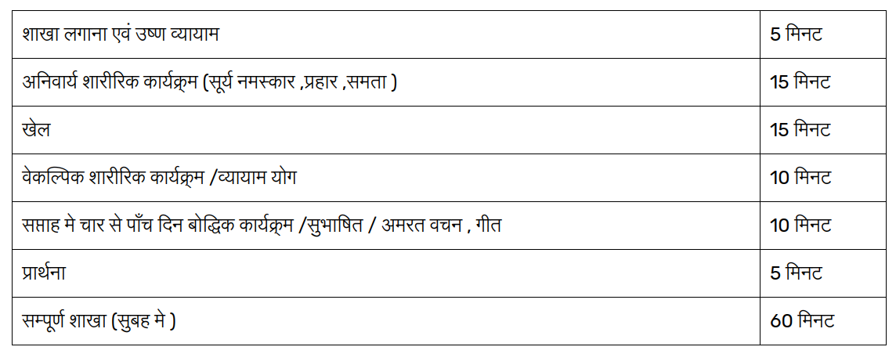

Home
Achar vibhag kya heKhelo Ke prakar
संघ दक्ष आरम् अग्रेसर अग्रेसर सम्यक् आरम् संघ संपत् संघ दक्ष संघ सम्यक् अग्रेसर अर्धवृत संघ आरम् संघ दक्ष (ध्वज लगेगा ) ध्वज प्रणाम 1,2,3, संख्या आरम् संघ दक्ष आरम् संघ दक्ष स्वस्थान
सीटी का संकेत -000(अग्रेसर ) अग्रेसर सम्यक् आरम् सीटी -00 (संघ सम्पत्) संघ दक्ष संघ सम्यक् अग्रेसर अर्धवृत संख्या आरम् संघ दक्ष आरम् संघ दक्ष सीटी0 (प्रार्थना) ध्वज प्रणाम 1, 2, 3 ध्वज उतरेगा। संघ विकिर
dhwaj ka map ↓
poll ka maap ↓
dhwaj mandal ki trijya ↓

शाखा प्रारंभ,
60 मिनट के कार्यक्रमों का संचालन,शाखा का समापन एक ही पद्धति से हो तथा शाखा के संबंध में अन्य आवश्यक बातों के लिए कुछ नियम बनाये गए हैं उनका प्रत्येक शाखा में आग्रह से पालन होना चाहिये
शाखा प्रारंभ करने से पूर्व कुछ बातों को समझना आवश्यक है।
1. संघस्थान :-
1.1. जिस स्थान पर स्वयंसेवक एकत्र आकर संस्कार ग्रहण करते हैं वह शाखा का मैदान साफ–सुथरा, मन को प्रसन्न करने वाला होना चाहिये I
1.2. संघस्थान पर जहां ध्वज का स्थान है, वह सादगीपूर्ण, स्वच्छ और सुसोभितरखना चाहिये
1.3. जिन शाखाओं में ध्वज नहीं लगाया जाता, वहा के स्वयंसेवकों को ध्वज प्रणाम आदि बातों का संस्कार एवं अभ्यास करने के लिए नियोजित स्थान पर ध्वज है ऐसा मानकर ध्वज प्रणाम आदि का व्यवहार हो I वह स्थान ध्वज मंडल या कोई चिन्ह बनाकर सीमांकित और स्वच्छ करना चाहिये I
2. ध्वजमंडल :-
2.1. दैनिक शाखा में ध्वज स्तंभ सामान्यतः 2.5 मीटर ऊँचा हो तथा बैठक को केंद्र मानकर 90 सें.मी.त्रिज्या का मंडल अथवा मंडलांश बनाना चाहिये I
3. संपत रेखा :-
3.1.जिस रेखा पर अग्रेसर खड़े किये जाते हैं उसे संपत रेखा कहा जाता है I यह रेखा ध्वजकेंद्र से ध्वजस्तंभ की उंचाई से अधिक ही होनी चाहिये I
शाखा प्रारंभ आज्ञा
0. संघ स्वस्थान (- ० – ० )
0.1 मुख्यशिक्षक के द्वारा ध्यानाकर्षण के लिए बजने वाली सीटी (- ० – ० ) बजते ही सब स्वयंसेवक आपस की बातचीत बंद कर संपत स्थान के पीछे की ओर ध्वजस्थानाभिमुख होकर आराम में खड़े रहेंगे I ध्यान रहे कि प्रथम सीटी का संकेत आज्ञा का पर्याय नहीं है I
1. संघ दक्ष
1.1. संघस्थान पर उपस्थित सभी स्वयंसेवक दक्ष करेंगे I
2. आरम
2.1. सभी स्वयंसेवक आरम में आयेंगें I
3. अग्रेसर
3.1.अग्रेसर की आज्ञा देने से पहले ही अग्रेसरो की संख्या या नाम बताना चाहिये
3.2.आज्ञा के पश्चात सभी अग्रेसर दक्ष कर प्रचलन करते हुए नियोजित स्थान पर (संपत रेखा पर) निश्चित क्रमानुसार (अभ्यागत, तरुण, बाल, शिशु) आकर दक्ष में खड़े रहेंगे
3.3. अग्रेसर को खडा करने की पद्धिति :-
3.3.1.संपत रेखा के सम्मुख मध्य में ध्वज आये इस बात का ध्यान रहे
3.3.2.उपर्युक्त कार्य को सरलता से तथा अचूक करने के लिए ऐसा भी कर सकते है – निर्धारित अग्रेसरों की संख्या से एक कम( (n-1) का फॉर्मूला n=अग्रेसरों जैसे:- चार अग्रेसर हैं तो तीन कदम (4-1) , पांच हैं तो चार कदम(5-1)) बांयी अथवा दाहिनी ओर जाकर अग्रेसरों को दो दो कदम के अंतर पर खड़े करने से ध्वज बीच में आ सकता है
3.3.3ध्यान रहे कि अग्रेसरों का खड़े होने का क्रम मुख्य अधिकारी दिशा से अभ्यागत, तरुण,बाल, शिशु रहे
4.अग्रेसर सम्यक
4.1. पहले अग्रेसर (अभ्यागत) के दाहिनी ओर तीन कदम जाकर मुख्यशिक्षक अग्रेसरों का सम्यक ठीक कराएगा
5. आरम
5.1. सभी अग्रेसर आरम करेंगें
6.संघ संपत
6.1. आज्ञा होते ही अग्रेसरों सहित सभी स्वयंसेवक दक्ष करेंगे I
6.2. पश्चात स्वयंसेवक प्रचलन करते हुए अपने अपने अग्रेसरों के पीछे हस्तांतर लेकर खड़े होंगें और अग्रेसर के आरम करने के पश्चात आरम करेंगे
6.3. मुख्यशिक्षक तथा उपस्थित सर्वोच्च अधिकारी क्रमशः वामतम (शिशुगण) तथा दक्षिणतम (अभ्यागत) प्रतति के बाजू से तीन कदम अंतर पर तथा ध्वजकेंद्र और संपत रेखा के मध्य में एक दूसरे की ओर मुँह करके खड़े रहेंगे
6.4.दैनिक शाखा में अधिकारी स्थान पर एक ही सर्वोच्च अधिकारी खड़े रहनेअपेक्षित है I किन्तु शाखा में प.पू.सरसंघचालकजी अथवा मा.सरकार्यवाहजी में से कोईएक अथवा दोनों उपस्थित होने पर शाखा प्रारंभ और समापन के समय उनके साथ वहाँ परउपस्थित सर्वोच्च संघचालक भी खड़े होंगे
6.5.ध्वजारोहण करने वाला स्वयंसेवक अपने बायें हाथ में तह किया हुआ ध्वजलेकर मुख्यशिक्षक के पास उनकी दाहिनी ओर खड़ा रहेगा I उसके तथा मुख्य शिक्षक के हाथ में उस समय दंड नही रहेगा
7.संघ दक्ष
7.1.सभी स्वयंसेवक दक्ष करेंगें I
8. संघ सम्यक
8.1. सभी अग्रेसर अर्धवृत कर अपनी पंक्ति का सम्यक देखेंगे I
8.2. सम्यक देखते समय यथावश्यक सूचना दे सकते हैं, किन्तु हाथ नहीं हिलाना हैं (सम्यक सभीभी स्वयंसेवकों के दाहिने कंधे या कान से देखना चाहिये )
9. अग्रेसर अर्धवृत
9.1. सभी अग्रेसर अर्धवृत करेंगे
10.संघ आरम
10.1. इसके पूर्व की आज्ञा केवल अग्रेसरों से संबंधित
होने के कारण केवल आरम न कहकर संघ आरम कहना
है
10.2. सभी स्वयंसेवक आरम करेंगे
11.संघ दक्ष
11.1. सभी स्वयंसेवक दक्ष करेंगे
11.2. ध्वजारोहण करने वाला स्वयंसेवक लघुतम मार्ग से
बायाँ हाथ, जिसमे तह किया हुआ ध्वज है, उसे ना हिलाते हुए ध्वजकेंद्र के सम्मुख
पर्याप्त निकट जाकर स्तभ करेगा
11.3. पश्चात ध्वजदंड उठाकर उसे अपनी बायीं बगल के आधार
से तिरछा स्थिर रखकर दोनों हाथों का उपयोग कर ध्वज चढ़ाएगा
11.4. ध्वजदंड दोनों हाथों से पकड़कर ध्वजस्थान की बैठक
में लगाएगा
11.5. पश्चात ध्वजमंडल के बाहर आकर ध्वजप्रणाम कर एक
कदम पीछे जायेगा
11.6. अभ्यागत अग्रेसर की दिशा में आवश्यकतानुसार वर्तन
कर प्रचलन करते हुए लघुतम मार्ग से उसके (अभ्यागत) दाहिनी ओर दो कदम के अंतर पर
पहुँच कर स्तभ करेगा तथा अर्धवृत कर ध्वज की ओर मुँह आर खड़ा होगा
12.ध्वजप्रणाम 1-2-3
12.1. एक, दो, तीन, ये आज्ञाएँ हैं, अंकताल नहीं, इसलिए
प्रत्येक क्रिया आज्ञा के पश्चात होनी चाहिये
13.संख्या
13.1. प्रतति में खड़ा हुआ अंत का स्वयंसेवक दाहिनी ओर
60 से.मी. हटकर (दाहिना पैर दाहिनी ओर 60 से.मी.रखकर बायाँ पैर मिलाना) प्रचलन करते हुए
व संख्या गिनते हुए बिना किसी को छुए अग्रेसर के बाजू में आकर स्तभ करेगा व
अग्रेसर को सुनाई दे ऐसी आवाज में स्वयं की संख्या जोड़कर बताएगा
14.आरम
14.1.इस आज्ञा में तीन प्रकार के काम होंगे I
14.1.1.संख्या देने वाला स्वयंसेवक अर्धवृत कर प्रचलन करते हुए अपने स्थान तक
जाकर स्तभ करेगा, पश्चात अर्धवृत कर 60 से.मी. बायीं ओर हटकर अपने स्थान पर सम्यक
देखकर आरम करेगा
14.1.2.संख्यागणक (ध्वजारोहण करके आया हुआ) एक कदम आगे जाकर वामवृत कर
प्रत्येक अग्रेसर के सम्मुख जाकर उससे संख्या प्राप्त कर आगे बढ़ेगा (उस समय
अग्रेसर दक्षकरेगा व संख्यागणक के आगे
बढ़ने के बाद आरम करेगा) इस प्रकार सभी अग्रेसरों से क्रमशः संख्या प्राप्त कर
अंतिम अग्रेसर से एक कदम आगे जाकर दक्षिणवृत करेगा I प्राप्त संख्या का योग कर
(कुल अभ्यागत, तरुण, बाल, शिशु इस प्रकार) तथा उसमे स्वयं की संख्या (वह जिस
श्रेणी में है उसमें) जोड़ेगा I पश्चात् मुख्यशिक्षक के सम्मुख दो कदम की दूरी पर
जाकर स्तभ करेगा और वामवृत कर उसे प्राप्त संख्या बताएगा I तत्पश्चात अपनी बायीं
ओर हटकर (बायाँ पैर बायीं ओर 60 से.मी.रखकर दाहिना पैर मिलाना) दो कदम आगे जाकर
अर्धवृत कर मुख्यशिक्षक के दाहिनी ओर आरम करके खड़ा होगा
14.1.3.अन्य सभी स्वयंसेवक आरम करेंगे
15.संघ दक्ष
15.1. शाखा में उपस्थित सर्वोच्च अधिकारी यदि दक्ष
द्वारा सम्मानित किये जाने वाले श्रेणी के है तो-
15.1.1.जैसे प.पू.सरसंघचालक / मा. सरकार्यवाह / मा. संघचालक क्रमानुसार के
हैं तो इस आज्ञा के पश्चात् मुख्यशिक्षक मा. अधिकारी के सम्मुख दो कदम की दूरी पर जाकर
स्तभ करेगा और संख्यागणक के द्वारा प्राप्त संख्या में स्वयं की, अधिकारी की तथा
संपत रचना के बाहर (किसी व्यवस्था के कारण) के स्वयंसेवकों की संख्या उचित श्रेणी
में जोड़कर मा. अधिकारी को (अभ्यागत, तरुण, बाल एवं शिशु) बताएगा
15.1.2.पश्चात् मा. अधिकारी की अनुमति प्राप्त कर एक पद प्रतिसर कर
स्वयंसेवकों की दिशा में घूमकर (पूर्ण रचना दृष्टिक्षेप में जाये इतना अवश्य वर्तन
करे) आरम की आज्ञा देगा
15.1.3.और अपने स्थान की दिशा में वर्तन कर अपने स्थान पर जाकर स्तभ और
अर्धवृत करेगा
15.2. उपस्थित अधिकारी कार्यवाह श्रेणी (सहसरकार्यवाह
से शाखा कार्यवाह तक) के हैं तो उन्हें संख्या बताने के लिए जाने से पूर्व -
16. आरम
16.1. आरम की आज्ञा देकर उपस्थित कार्यवाह श्रेणी
(सहसरकार्यवाह से शाखा कार्यवाह तक) के सम्मुख दो कदम की दूरी पर जाकर स्तभ करेगा
और संख्यागणक के द्वारा प्राप्त संख्या में स्वयं की, अधिकारी की तथा संपत रचना के
बाहर (किसी व्यवस्था के कारण) के स्वयंसेवकों की संख्या उचित श्रेणी में जोड़कर मा.
अधिकारी को (अभ्यागत, तरुण, बाल एवं शिशु) बताएगा
16.2. पश्चात् मा. अधिकारी की अनुमति प्राप्त कर मुख्यशिक्षक
एक पद प्रतिसर कर अर्धवृत करेगा
16.3. और अपने स्थान पर आकर स्तभ तथा अर्धवृत करेगा
16.4. किसी विशेष कार्यक्रम में मुख्यशिक्षक और अधिकारी
के बीच दूरी अधिक होने पर मुख्यशिक्षक द्वारा दौड़ कर संख्या देने जाना उचित हिगा
जिससे समय की बचत हो सके
16.5. कोई भी प्रणाम अधिकारी उपस्थित न होने पर
उपर्युक्त 15 एवं 16 की आज्ञाएँ देना आवश्यक नहीं है
17. संघ दक्ष
17.1. सभी स्वयंसेवक दक्ष करेंगे
18. स्वस्थान
18.1. आज्ञा के पश्चात् स्वयंसेवक अपने अपने गण स्थान
पर जाकर गणशिक्षक की आज्ञानुसार कार्य करेंगे
18.2. जहां स्वयंसेवक गण अनुसार खड़े हैं वहाँ आज्ञा के
पश्चात् गण शिक्षक ही अपने गाणों को ले जायेंगे
18.3. तत्पश्चात तय कार्यक्रमों के शाखा चलेगी
मुख्यशिक्षक संपत रेखा पर जाकर विकिर के लिए
आज्ञाएँ देगा I
1. अग्रेसरों को सूचना
1.1. प्रार्थना हेतु संपत कराने के लिये मुख्यशिक्षक सीटी बजाएगा ( - ० ० ० )
1.2.यदि दैनिक शाखा में सीटी न हो तो मुख्यशिक्षक “अग्रेसर” की आज्ञा देगा I
1.3. सभी तय अग्रेसर प्रचलन करते हुए नियोजित स्थान पर (संपत रेखा पर) निश्चित क्रमानुसार (अभ्यागत, तरुण, बाल, शिशु) आकर दक्ष में खड़े रहेंगे I
1.4.अग्रेसर को खडा करने की पद्धिति :-
1.4.1.संपत रेखा के सम्मुख मध्य में ध्वज आये इस बात का ध्यान रहे I
1.4.2.उपर्युक्त कार्य को सरलता से तथा अचूक करने के लिए ऐसा भी कर सकते है – निर्धारित अग्रेसरों की संख्या से एक कम जैसे:- चार अग्रेसर हैं तो तीन कदम, पांच हैं तो चार कदम) बांयी अथवा दाहिनी ओर जाकर अग्रेसरों को दो दो कदम के अंतर पर खड़े करने से ध्वज बीच में आ सकता है I
1.4.3.ध्यान रहे कि अग्रेसरों का खड़े होने का क्रम मुख्य अधिकारी दिशा सेअभ्यागत, तरुण,बाल, शिशु रहे I
2.अग्रेसर सम्यक
2.1.पहले अग्रेसर (अभ्यागत) के दाहिनी ओर तीन कदम जाकर मुख्यशिक्षक अग्रेसरों का सम्यक ठीक कराएगा I
3.आरम
3.1.सभी अग्रेसर आरम करेंगें I
4.संघ संपत की सूचना
4.1.स्वयंसेवकों को संपत कराने के लिए मुख्यशिक्षक सीटी बजाएगा ( - ० ० )
4.2. यदि दैनिक शाखा में सीटी न हो तो मुख्यशिक्षक “संघ संपत” कीआज्ञा देगा I
4.3.सीटी बजते (आज्ञा होते) ही सभी अग्रेसर दक्ष करेंगे I
4.4.सभी गणशिक्षक अपने गाणों को रचना (अग्रेसरों) के पास लाकर स्वस्थान की आज्ञा देंगे I इस समय स्वस्थान देने के लिए गण को स्तभ देने की आवश्यकता नहीं है I
4.5.पश्चात स्वयंसेवक अपने-अपने अग्रेसरों के पीछे हस्तांतर लेकर खड़े होंगें एवं सम्यक देख कर अग्रेसर के आरम करने के पश्चात आरम करेंगे I
4.6.मुख्यशिक्षक तथा उपस्थित सर्वोच्च अधिकारी क्रमशः वामतम (शिशुगण) तथा दक्षिणतम (अभ्यागत) प्रतति के बाजू से तीन कदम अंतर पर तथा ध्वजकेंद्र और संपत रेखा के मध्य में एक दूसरे की ओर मुँह करके खड़े रहेंगे I
4.7. दैनिक शाखा में अधिकारी स्थान पर एक ही सर्वोच्च अधिकारी खड़े रहने अपेक्षित है I किन्तु शाखा में प.पू.सरसंघचालकजी अथवा मा.सरकार्यवाहजी में से कोई एक अथवा दोनों उपस्थित होने पर शाखा प्रारंभ और समापन के समय उनके साथ वहाँ परउपस्थित सर्वोच्च संघचालक भी खड़े होंगे I
4.8. प्रार्थना गायक (करने वाला स्वयंसेवक) अभ्यागत अग्रेसर से दाहिनी ओर दो कदम के अंतर पर संपत करेगा I उसके तथा मुख्य शिक्षक के हाथ में उस समय दंड नही रहेगा I
5. संघ दक्ष
5.1.सभी स्वयंसेवक दक्ष करेंगें I
6. संघ सम्यक
6.1.सभी अग्रेसर अर्धवृत कर अपनी पंक्ति का सम्यक देखेंगे I
6.2.सम्यक देखते समय यथावश्यक सूचना दे सकते हैं, किन्तु हाथ नहीं हिलानाहैं I (सम्यक सभी स्वयंसेवकों के दाहिने कंधे या कान से देखना चाहिये I)
7.अग्रेसर अर्धवृत
7.1.सभी अग्रेसर अर्धवृत करेंगे I
8.संख्या
8.1.प्रतति में खड़ा हुआ अंत का स्वयंसेवक दाहिनी ओर 60 से.मी. हटकर(दाहिना पैर दाहिनी ओर 60 से.मी.रखकर बायाँ पैर मिलाना) प्रचलन करते हुए व संख्या गिनते हुए बिना किसी को छुए अग्रेसर के बाजू में आकर स्तभ करेगा व अग्रेसर को सुनाई दे ऐसी आवाज में स्वयं की संख्या जोड़कर बताएगा I
9.आरम
9.1.इस आज्ञा में तीन प्रकार के काम होंगे I
9.1.1.संख्या देने वाला स्वयंसेवक अर्धवृत कर प्रचलन करते हुए अपने स्थान तक जाकर स्तभ करेगा, पश्चात अर्धवृत कर 60 से.मी. बायीं ओर हटकर अपने स्थान पर सम्यक देखकर आरम करेगा I
9.1.2.संख्यागणक (ध्वजारोहण करके आया हुआ) एक कदम आगे जाकर वामवृत कर प्रत्येक अग्रेसर के सम्मुख जाकर उससे संख्या प्राप्त कर आगे बढ़ेगा (उस समय अग्रेसर दक्ष करेगा व संख्यागणक के आगे बढ़ने के बाद आरम करेगा) इस प्रकार सभी अग्रेसरों से क्रमशः संख्या प्राप्त कर अंतिम अग्रेसर से एक कदम आगे जाकर दक्षिणवृत करेगा I प्राप्त संख्या का योग कर (कुल अभ्यागत, तरुण, बाल, शिशु इस प्रकार) तथा उसमे स्वयं की संख्या (वह जिस श्रेणी में है उसमें) जोड़ेगा I पश्चात् मुख्यशिक्षक के सम्मुख दो कदम की दूरी पर जाकर स्तभ करेगा और वामवृत कर उसे प्राप्त संख्या बताएगा I तत्पश्चात अपनी बायीं ओर हटकर (बायाँ पैर बायीं ओर 60 से.मी.रखकर दाहिना पैर मिलाना) दो कदम आगे जाकर अर्धवृत कर मुख्यशिक्षक के दाहिनी ओर आरम करके खड़ा होगा I
9.1.3.अन्य सभी स्वयंसेवक आरम करेंगे I
10.संघ दक्ष
10.1. शाखा में उपस्थित सर्वोच्च अधिकारी यदि दक्ष द्वारा सम्मानित किये जाने वाले श्रेणी के है तो-
10.1.1.जैसे प.पू.सरसंघचालक / मा. सरकार्यवाह / मा. संघचालक क्रमानुसार के हैं तो इस आज्ञा के पश्चात् मुख्यशिक्षक मा. अधिकारी के सम्मुख दो कदम की दूरी पर जाकर स्तभ करेगा और संख्यागणक के द्वारा प्राप्त संख्या में स्वयं की, अधिकारी की तथा संपत रचना के बाहर (किसी व्यवस्था के कारण) के स्वयंसेवकों की संख्या उचित श्रेणी में जोड़कर मा. अधिकारी को (अभ्यागत, तरुण, बाल एवं शिशु) बताएगा I
10.1.2.पश्चात् मा. अधिकारी की अनुमति प्राप्त कर एक पद प्रतिसर कर स्वयंसेवकों की दिशा में घूमकर (पूर्ण रचना दृष्टिक्षेप में जाये इतना अवश्य वर्तन करे) आरम की आज्ञा देगा I
10.1.3.और अपने स्थान की दिशा में वर्तन कर अपने स्थान पर जाकर स्तभ और अर्धवृत करेगा I
10.2. उपस्थित अधिकारी कार्यवाह श्रेणी (सहसरकार्यवाह से शाखा कार्यवाह तक) के हैं तो उन्हें संख्या बताने के लिए जाने से पूर्व -
11.आरम
11.1. आरम की आज्ञा देकर उपस्थित कार्यवाह श्रेणी (सहसरकार्यवाह से शाखा कार्यवाह तक) के सम्मुख दो कदम की दूरी पर जाकर स्तभ करेगा और संख्यागणक के द्वारा प्राप्त संख्या में स्वयं की, अधिकारी की तथा संपत रचना के बाहर (किसी व्यवस्था के कारण) के स्वयंसेवकों की संख्या उचित श्रेणी में जोड़कर मा. अधिकारी को (अभ्यागत, तरुण, बाल एवं शिशु) बताएगा I
11.2.पश्चात् मा. अधिकारी की अनुमति प्राप्त कर मुख्यशिक्षक एक पद प्रतिसर कर अर्धवृत करेगा I
11.3.और अपने स्थान पर आकर स्तभ तथा अर्धवृत करेगा I
11.4.किसी विशेष कार्यक्रम में मुख्यशिक्षक और अधिकारी के बीच दूरी अधिक होने पर मुख्यशिक्षक द्वारा दौड़ कर संख्या देने जाना उचित हिगा जिससे समय की बचत हो सके I
11.5. कोई भी प्रणाम अधिकारी उपस्थित न होने पर उपर्युक्त 10 एवं 11 की आज्ञाएँ देना आवश्यक नहीं है I
12. संघ दक्ष
12.1. सभी स्वयंसेवक दक्ष करेंगे I
13. प्रार्थना की सूचना
13.1. प्रार्थना के लिए मुख्यशिक्षक सीटी का संकेत ( ० ) करेगा I
13.2 यदि सीटी न हो तो “प्रार्थना” की आज्ञा देगा I
13.3. प्रार्थना के लिए सीटी का संकेत (आज्ञा) होने परसभी स्वयंसेवक प्रणाम की स्थिति में आयेंगे तत्पश्चात प्रार्थनागायक प्रार्थना कहेगा और सभी दोहरायेंगे I
14. ध्वजप्रणाम 1-2-3
14.1. एक, दो, तीन, ये आज्ञाएँ हैं, अंकताल नहीं, इसलिए प्रत्येक क्रिया आज्ञा के पश्चात होनी चाहिये I
14.2. ध्वजप्रणाम के पश्चात् प्रार्थना गायक स्वयंसेवक लघुतम मार्ग से ध्वज के सम्मुख ध्वजमंडल के बाहर किन्तु परिधि के निकट आकर स्तभ करेगा I
14.3. तत्पश्चात ध्वजप्रणाम कर ध्वजमंडल के अंदर जाकर दोनों हाथों से ध्वजदंड को बैठक से बाहर निकालकर अपनी बायीं बगल में तिरछा स्थिर रखकर दाहिने हाथ से ध्वज निकालेगा I
14.4. ध्वज की घड़ी कर पश्चात ध्वजदंड को इस प्रकार रखेगा कि वापस जाने के मार्ग में बाधा न बने I
14.5. पश्चात ध्वज को बायें हाथ की मुट्ठी में लेकर उसी स्थान से अपने स्थान की दिशा में आवश्यकतानुसार वर्तन कर प्रचलन करते हुए लघुतम मार्ग से मुख्यशिक्षक के दाहिनी ओर पहुँच कर स्तभ करेगा तथा अर्धवृत कर खड़ा होगा I
15. संघ विकिर
15.1. आज्ञा होने पर सर्वोच्च अधिकारी, मुख्यशिक्षक व प्रार्थना गायक को छोड़कर अन्य सभी स्वयंसेवक दक्षिणवृत करेंगे I
15.2. बाद में सभी एक साथ प्रणाम करेंगे (तीन अंकों में ही) और मन में चार अंक गिनकर अपना स्थान छोड़ेंगे I
संघ विकिर की आज्ञा शाखा समापन की अंतिम आज्ञा है I अतः सूचनाएँ आदि
देने का कार्य प्रार्थना के पूर्व ही कर लेना चाहिये I
·
विशेष प्रसंगों पर किसी विशेष प्रयोजन से उसी रचना में स्वयंसेवकों को
रोकना आवश्यक हो तो विकिर की आज्ञा के पश्चात् वामवृत की आज्ञा दे सकते हैं I
·
आरम में सूचना देने के बाद दक्ष देकर विश्रम दे I